Docker笔记
介绍
Docker官网：http://www.docker.com
Github Docker源码：https://github.com/docker/docker
Docker 是一个开源的应用容器引擎，让开发者可以打包他们的应用以及依赖包到一个可移植的容器中，然后发布到任何流行的Linux机器上，也可以实现虚拟化，容器是完全使用沙箱机制，相互之间不会有任何接口。
Docker 包括三个基本概念
- 镜像（Image）
- 容器（Container）
- 仓库（Repository）
理解了这三个概念，就理解了 Docker 的整个生命周期
流程图
Docker使用 C/S 体系的架构，Docker客户端与Docker守护进程通信，Docker 守护进程负责构建，运行和分发 Docker容器。Docker客户端和守护进程可以在同一个系统上运行，也可以将 Docker客户端连接到远程Docker守护进程。Docker客户端和守护进程使用 REST API 通过UNIX套接字或网络接口进行通信。

为什么要使用 Docker？
作为一种新兴的虚拟化方式，Docker 跟传统的虚拟化方式相比具有众多的优势。
更高效的利用系统资源
由于容器不需要进行硬件虚拟以及运行完整操作系统等额外开销，Docker 对系统资源的利用率更高。无论是应用执行速度、内存损耗或者文件存储速度，都要比传统虚拟机技术更高效。因此，相比虚拟机技术，一个相同配置的主机，往往可以运行更多数量的应用。
更快速的启动时间
传统的虚拟机技术启动应用服务往往需要数分钟，而 Docker 容器应用，由于直接运行于宿主内核，无需启动完整的操作系统，因此可以做到秒级、甚至毫秒级的启动时间。大大的节约了开发、测试、部署的时间。
一致的运行环境
开发过程中一个常见的问题是环境一致性问题。由于开发环境、测试环境、生产环境不一致，导致有些 bug 并未在开发过程中被发现。而 Docker 的镜像提供了除内核外完整的运行时环境，确保了应用运行环境一致性，从而不会再出现「这段代码在我机器上没问题啊」这类问题。
持续交付和部署
对开发和运维（DevOps）人员来说，最希望的就是一次创建或配置，可以在任意地方正常运行。
使用 Docker 可以通过定制应用镜像来实现持续集成、持续交付、部署。开发人员可以通过Dockerfile持续集成(Continuous Integration)来进行镜像构建，并结合持续部署(Continuous Delivery/Deployment)系统进行集成测试，而运维人员则可以直接在生产环境中快速部署该镜像，甚至结合系统进行自动部署。
而且使用Dockerfile使镜像构建透明化，不仅仅开发团队可以理解应用运行环境，也方便运维团队理解应用运行所需条件，帮助更好的生产环境中部署该镜像。
更轻松的迁移
由于 Docker 确保了执行环境的一致性，使得应用的迁移更加容易。Docker 可以在很多平台上运行，无论是物理机、虚拟机、公有云、私有云，甚至是笔记本，其运行结果是一致的。因此用户可以很轻易的将在一个平台上运行的应用，迁移到另一个平台上，而不用担心运行环境的变化导致应用无法正常运行的情况。
更轻松的维护和扩展
Docker 使用的分层存储以及镜像的技术，使得应用重复部分的复用更为容易，也使得应用的维护更新更加简单，基于基础镜像进一步扩展镜像也变得非常简单。此外，Docker 团队同各个开源项目团队一起维护了一大批高质量的官方镜像，既可以直接在生产环境使用，又可以作为基础进一步定制，大大的降低了应用服务的镜像制作成本。
对比传统虚拟机总结
| 特性 | 容器 | 虚拟机 |
|---|---|---|
| 启动 | 秒级 | 分钟级 |
| 硬盘使用 | 一般为MB |
一般为GB |
| 性能 | 接近原生 | 弱于 |
| 系统支持量 | 单机支持上千个容器 | 一般几十个 |
安装
以下以ubuntu举例安装：
前置工作
(如果没安装过的可以跳过第一步)
卸载旧版本Docker
1
sudo apt-get remove docker docker-engine docker.io containerd runc
更新
apt软件包索引并安装软件包，允许apt通过HTTPS使用存储库:1
2
3
4
5
6
7sudo apt-get update
sudo apt-get install \
ca-certificates \
curl \
gnupg \
lsb-release添加Docker的官方GPG密钥:
1
curl -fsSL https://download.docker.com/linux/ubuntu/gpg | sudo gpg --dearmor -o /usr/share/keyrings/docker-archive-keyring.gpg
添加稳定的更新下载库
1
2
3echo \
"deb [arch=$(dpkg --print-architecture) signed-by=/usr/share/keyrings/docker-archive-keyring.gpg] https://download.docker.com/linux/ubuntu \
$(lsb_release -cs) stable" | sudo tee /etc/apt/sources.list.d/docker.list > /dev/null
正式安装
终端输入
1 | $ sudo apt-get update |
运行hello-world来验证Docker引擎是否正确安装
1 | $ sudo docker run hello-world |
升级：
tips:
可以使用sudo -s -H活动超级权限，之后就执行Docker命令就不用加sudo啦
卸载
卸载Docker引擎、CLI和容器包:
1
sudo apt-get purge docker-ce docker-ce-cli containerd.io
删除相关内容，images(镜像)、containers(容器)、volumes(卷):
1
2sudo rm -rf /var/lib/docker
sudo rm -rf /var/lib/containerd
简单配置
docker加速器
因为国内从 Docker Hub 拉取镜像有时会遇到困难，此时可以配置镜像加速器。Docker 官方和国内很多云服务商都提供了国内加速器服务，例如：
- Docker 官方提供的中国 registry mirror
https://registry.docker-cn.com - 阿里云加速器(需登录账号获取)
- 七牛云加速器
https://reg-mirror.qiniu.com/
我们以 Docker 官方加速器https://registry.docker-cn.com为例进行介绍。
请在/etc/docker/daemon.json中写入如下内容（如果文件不存在请新建该文件）
1 | { |
注意⚠️：一定要保证该文件符合json规范，否则Docker将不能启动。
添加好之后重新启动服务：
1 | $ sudo systemctl daemon-reload |
检查加速器是否生效
命令执行docker info，如果从结果中看到了如下内容，说明配置成功。
1 | Registry Mirrors: |

基础
镜像(Image)
Docker 镜像是一个特殊的文件系统，除了提供容器运行时所需的程序、库、资源、配置等文件外，还包含了一些为运行时准备的一些配置参数（如匿名卷、环境变量、用户等）。镜像不包含任何动态数据，其内容在构建之后也不会被改变。
镜像一个只读的文件，类似于我们安装操作系统时候所需要的那个iso光盘镜像，通过运行这个镜像来完成各种应用的部署。 这里的镜像就是一个能被docker运行起来的一个程序，里面封装了所需的运行环境。
镜像指令
从网上搜索镜像
搜索
命令格式：
1 | # 镜像名称 |
命令演示：
1 | docker search ubuntu |
获取
命令格式：
1 | docker pull [image_name] |
命令演示：
1 | docker pull ubuntu |
获取的镜像所在位置: /var/lib/docker/
查看镜像
命令格式：
1 | docker images <image_name> |
命令演示：
1 | docker images ubuntu |
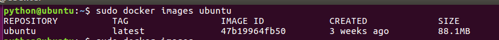
镜像的ID唯一标识了镜像，如果ID相同,说明是同一镜像。TAG信息来区分不同发行版本，如果不指定具体标记,默认使用latest标记信息
列出所有的本地镜像
1 | docker images |
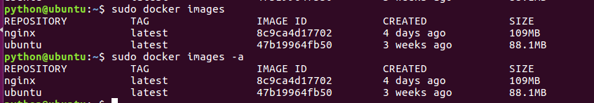
镜像重命名并拷贝
因为每创建了的镜像都会留一个(tag)发行版，所以重命名的时候是拷贝一个新的并新命名一个(tag)发行版
提示：tag ≈ 标签 ≈ 版本号 ≈ 发行版
命令格式：
1 | # 要拷贝的镜像名:版本号 新镜像名:版本号 |
命令演示：
1 | docker tag nginx:latest nginx:v1.0 |
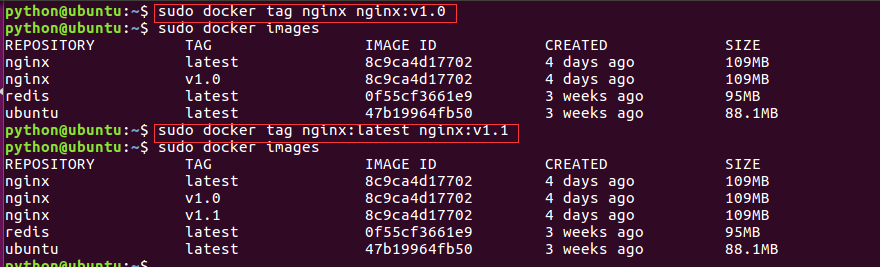
删除镜像
命令格式：
1 | # 镜像id 或 镜像名 : 镜像版本号 |
命令演示：
1 | docker rmi ubuntu |
注意⚠️：如果一个image_id存在多个名称，那么应该使用name:tag的格式删除镜像
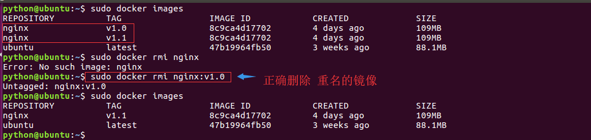
导出镜像
将已经下载好的镜像，导出到本地，以备后用。
命令格式：
docker save -o [包文件] [镜像]
docker save [镜像1] ... [镜像n] > [包文件]
注意⚠️：docker save 会保存镜像的所有历史记录和元数据信息
导出镜像
1 | docker save -o ubuntu.tar ubuntu |
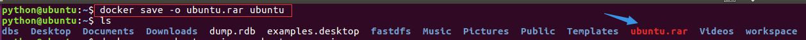
导入镜像
为了更好的演示效果，我们先将njinx的镜像删除掉
1 | docker rmi ubuntu |
导入镜像命令格式：
1 | docker load < [image.tar_name] |
注意:
docker load 不能指定镜像的名称
导入镜像文件
1 | docker load < ubuntu.tar |
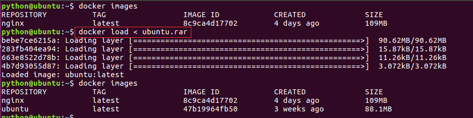
查看镜像历史
查看镜像历史命令格式：
1 | docker history [image_name] |
我们获取到一个镜像，想知道他默认启动了哪些命令或者都封装了哪些系统层，那么我们可以使用docker history这条命令来获取我们想要的信息
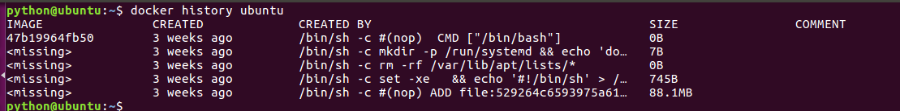
容器
镜像（Image）和容器（Container）的关系，就像是面向对象程序设计中的类和实例一样，镜像是静态的定义，容器是镜像运行时的实体。容器可以被创建、启动、停止、删除、暂停等。
容器的实质是进程，但与直接在宿主执行的进程不同，容器进程运行于属于自己的独立的命名空间。
指令
查看容器
1 | docker ps |
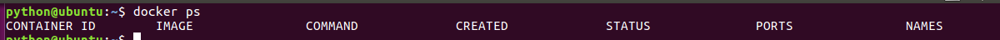
查看所有容器
1 | docker ps -a |
注意⚠️：管理docker容器可以通过名称，也可也通过id
启动容器(创建容器)
守护进程方式启动容器(创建容器)
1 | docker run [参数] docker_image [执行的命令] |
让Docker容器在后台守护形式运行,可以通过添加-d参数来实现(务必使用此方案)
1 | docker run -d nginx |
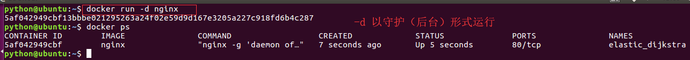
-t选项让Docker分配一个伪终端并绑定到容器的标准输入上，-i则让容器的标准输入保持打开
1 | docker run -i -t nginx /bin/bash |
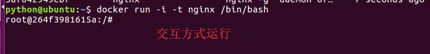
–name选项来给容器设置个名字
1 | docker run --name myubuntu -dit ubuntu |
启动已终止的容器
1 | docker start [container_id] |
关闭容器
1 | docker stop [container_id] |
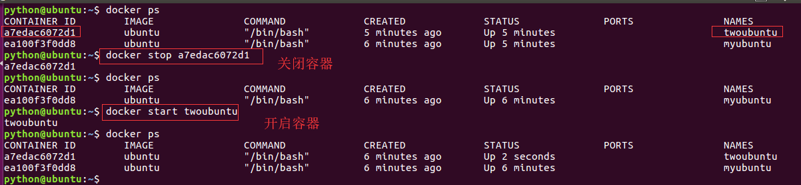
删除容器
删除容器有两种方法
正常删除 – 删除已关闭的
1 | docker rm [container_id] |
强制删除 – 删除正在运行的
1 | docker rm -f [container_id] |
拓展批量关闭容器(删除所有容器)
1 | docker rm -f $(docker ps -a -q) |
进入正在运行的容器
1 | docker exec [选项参数] 容器id/容器名 命令 |
只用-i参数时，由于没有分配伪终端，界面没有我们熟悉的Linux命令提示符，但命令执行结果仍然可以返回。
当-i-t参数一起使用时，则可以看到我们熟悉的Linux命令提示符。
1 | docker exec -it myubuntu /bin/bash |
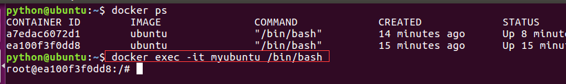
提示:使用-d启动的容器，exit退出容器后，不会导致容器的停止。
基于容器创建镜像(逆向工程)
1 | # 提交 容器id 新镜像名称:版本号 |
查看镜像
1 | docker images |
| REPOSITORY | TAG | IMAGE ID | CREATED | SIZE |
|---|---|---|---|---|
| (名称) | (标签) | (镜像id) | (创建时间) | (大小) |
启动容器
1 | docker run -it [镜像名] |
查看容器详细信息
1 | docker inspect [容器id] |
查看容器运行日志
1 | docker logs [容器id] |